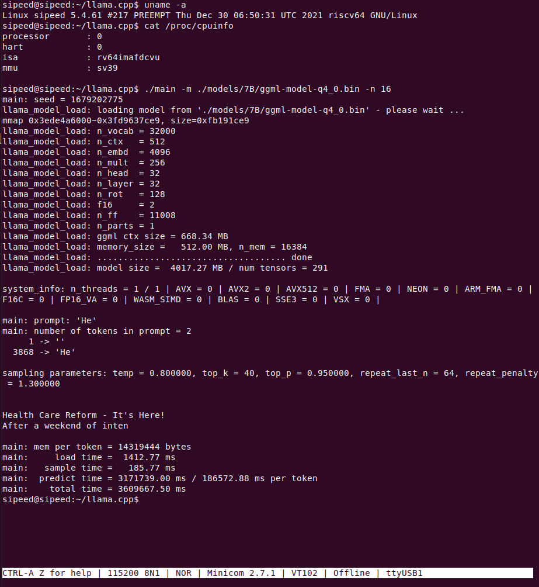
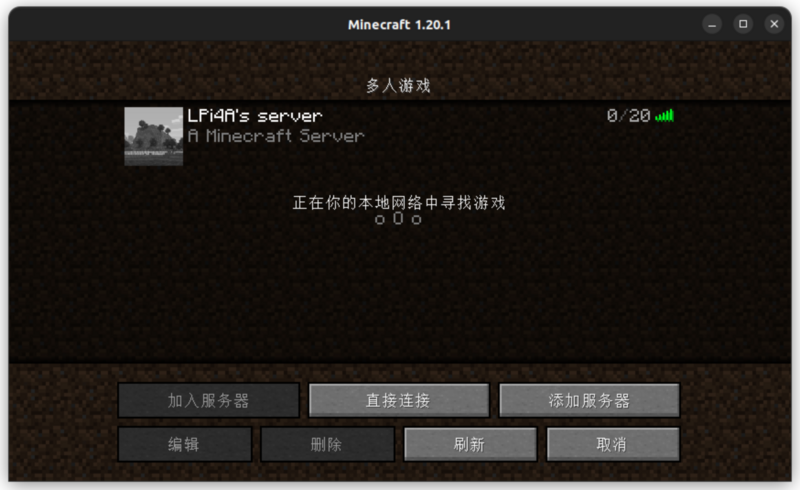

Typical Application
Update history
| Date | Version | Author | Update content |
|---|---|---|---|
| 2023-07-21 | v1.1 | ztd |
|
| 2023-05-08 | v1.0 | wonder |
|
llama.cpp
llama is the META Open Source Large Language Model, and llama.cpp is the ggerganov Open Source pure cpp runtime llama inference project.
Thanks to llama.cpp, an excellent project, we can run LLM on LicheePi 4A.
Zepan slightly modified llama.cpp https://github.com/Zepan/llama.cpp earlier to allow it to run the 7B model with less memory (down to about 700MB).
You can see that TH1520 takes about 6s to compute a token (without V-extension acceleration, which is expected to accelerate it by a factor of 4-8, so feel free to pitch in if you've added V-extension support!)

The feasibility of running the 7B model on an entry-level C906 core was also briefly tested, and due to the small amount of memory in the D1 and the use of mmap read-only extensions, a large number of low-speed IO operations were introduced, which slowed down the speed of the run, ending up at only 18s/token.

YOLOX Target Detection
This tutorial is an example of how to deploy the YOLOX model to accomplish target detection on the LPi4A (LicheePi 4A) development board platform.
Included in the tutorial:
- Installing the Python environment on the LPi4A development board
- Executing the model using the source code from the YOLOX project.
The tutorial follows the usual model deployment process:
- Basic Python environment configuration on LPi4A. 2.
- Obtaining the yolox source code and models
- Installing python packages that yolox depends on
- Example execution using HHB-onnxruntime on LPi4A
Basic Python Environment Configuration
Basic Hardware and Software Configuration
Refer to the description in LPi4A's "Out-of-the-box experience", install the development board correctly, and enter with root privileges after powering on and booting up.
Ensure that you are connected to the Internet, and update the apt source.
sudo apt update
Install some software for subsequent use in the example
sudo apt install wget git vim
Installing the SHL Library
wget https://github.com/T-head-Semi/csi-nn2/releases/download/v2.4-beta.1/c920.tar.gz
tar xf c920.tar.gz
cp c920/lib/* /usr/lib/riscv64-linux-gnu/ -rf
Python Environment Configuration
Python version 3.11 is installed by default on the system where LPi4A is burned. You can confirm this with the following command
python --version
We will use python 3.11 as an example, but for other versions, you will need to change to the corresponding version of the command when installing dependencies.
Most of the packages that the various python programs depend on can be installed via pip, which can be installed with the following command
apt install python3-pip
Before installing other python packages, install the venv package, which is used to create a python virtual environment
apt install python3.11-venv
Create a python virtual environment and activate it
cd /root
python3 -m venv ort
source /root/ort/bin/activate
At this point, the basic python environment has been created. Similar to other architectures, you can install pure python packages directly via pip install.
The opencv installation will depend on other python packages, so if pip does not download them automatically, you can install the dependencies manually first. See download riscv whl for more information on how to get the packages.
Get YOLOX
YOLOX is a YOLO-like target detection model with quite excellent performance.
The source code and model can be downloaded directly from github
git clone https://github.com/Megvii-BaseDetection/YOLOX.git
cd YOLOX/demo/ONNXRuntime
wget https://github.com/Megvii-BaseDetection/YOLOX/releases/download/0.1.1rc0/yolox_s.onnx
Modify the source code
This tutorial will use the HHB-onnxruntime execution model, so switch to. In the onnxruntime example directory in the source code, modify the beginning of the file demo/ONNXRuntime/onnx_inference.py to add two new lines of code
#!/usr/bin/env python3
# Copyright (c) Megvii, Inc. and its affiliates.
+import sys
+sys.path.insert(0, "../../")
+
import argparse
import os
The code uses sys.path.insert to specify the search path, thus eliminating the need to install the YOLOX installer from the source code.
**Installing dependencies
The python ecosystem for the RISC-V architecture is still lacking, but in the future, packages dependent on YOLOX can be installed directly from the requirements.txt file. requirements.txt) file.
The YOLOX example in this tutorial relies on a large number of python packages, download the pre-compiled python packages
git clone -b python3.11 https://github.com/zhangwm-pt/prebuilt_whl.git
cd prebuilt_whl
It can be handled manually in the following order.
pip install numpy-1.25.0-cp311-cp311-linux_riscv64.whl
pip install opencv_python-4.5.4+4cd224d-cp311-cp311-linux_riscv64.whl
pip install kiwisolver-1.4.4-cp311-cp311-linux_riscv64.whl
pip install Pillow-9.5.0-cp311-cp311-linux_riscv64.whl
pip install matplotlib-3.7.2.dev0+gb3bd929cf0.d20230630-cp311-cp311-linux_riscv64.whl
pip install pycocotools-2.0.6-cp311-cp311-linux_riscv64.whl
pip3 install loguru-0.7.0-py3-none-any.whl
pip3 install torch-2.0.0a0+gitc263bd4-cp311-cp311-linux_riscv64.whl
pip3 install MarkupSafe-2.1.3-cp311-cp311-linux_riscv64.whl
pip3 install torchvision-0.15.1a0-cp311-cp311-linux_riscv64.whl
pip3 install psutil-5.9.5-cp311-abi3-linux_riscv64.whl
pip3 install tqdm-4.65.0-py3-none-any.whl
pip3 install tabulate-0.9.0-py3-none-any.whl
The installation process will involve other pure python dependencies, which pip will automatically download from the official sources.
Installation of HHB-onnxruntime
HHB-onnxuruntime is a port of the SHL backend (execution providers) that allows onnxruntime to reuse the high-performance optimized code in SHL for the Gentei CPU.
wget https://github.com/zhangwm-pt/onnxruntime/releases/download/riscv_whl/onnxruntime-1.14.1-cp311-cp311-linux_riscv64.whl
pip install onnxruntime-1.14.1-cp311-cp311-linux_riscv64.whl
Execute
Execute the onnx_inference.py example in the example directory
python3 onnx_inference.py -m yolox_s.onnx -i soccer.jpg -o outdir -s 0.3 --input_shape 640,640
python3 onnx_inference.py -m yolox_s.onnx -i soccer.jpg -o outdir -s 0.3 --input_shape640,640
Parameter Description:
-m: specify model
-i: specify image
-o: specify output directory
--s: specify the detection threshold
--input_shape: specify the size of the image to be used for detection
Reference results
The input for this tutorial is the following image, which is an image of an athlete playing soccer, and the expected detection result is to detect two people and a soccer ball.
Image from the web

After the example executes normally, the result image soccer.jpg will be generated in the outdir directory. the image will draw the detected target with a box and labeled with the probability, and the effect is as shown in the following figure:

Docker
First install the required packages
sudo apt-get update
sudo apt-get install docker docker-compose
Once the installation is complete, use the sudo docker info command to verify that the installation was successful:
sipeed@lpi4a:~$ sudo docker info
Client:
Context: default
Debug Mode: false
Server:
Containers: 0
Running: 0
Paused: 0
Stopped: 0
Images: 0
Server Version: 20.10.24+dfsg1
Storage Driver: overlay2
Backing Filesystem: extfs
Supports d_type: true
Native Overlay Diff: true
userxattr: false
Logging Driver: json-file
Cgroup Driver: systemd
Cgroup Version: 2
Plugins:
Volume: local
Network: bridge host ipvlan macvlan null overlay
Log: awslogs fluentd gcplogs gelf journald json-file local logentries splunk syslog
Swarm: inactive
Runtimes: io.containerd.runc.v2 io.containerd.runtime.v1.linux runc
Default Runtime: runc
Init Binary: docker-init
containerd version: 1.6.20~ds1-1+b1
runc version: 1.1.5+ds1-1+b1
init version:
Security Options:
seccomp
Profile: default
cgroupns
Kernel Version: 5.10.113-gfac22a756532
Operating System: Debian GNU/Linux 12 (bookworm)
OSType: linux
Architecture: riscv64
CPUs: 4
Total Memory: 15.47GiB
Name: lpi4a
ID: MCKE:SEGQ:EBUX:ZMLC:P2WK:GIJ7:XAEQ:F56H:73HK:C3L5:IA5A:7GJI
Docker Root Dir: /var/lib/docker
Debug Mode: false
Registry: https://index.docker.io/v1/
Labels:
Experimental: false
Insecure Registries:
127.0.0.0/8
Live Restore Enabled: false
If you want a normal user to have Docker execution privileges as well, you can execute the following command to do so:
sudo groupadd docker
sudo usermod -aG docker $USER
newgrp docker
These commands add a username with normal user privileges to the docker user group and activate group privileges. If you don't add them, you'll need to execute Docker-related commands with sudo privileges every time you execute them.
Next, let's pull up the hello-world image to get a taste of Docker:
sipeed@lpi4a:~$ docker pull hello-world
Using default tag: latest
latest: Pulling from library/hello-world
b102dd09f2b3: Pull complete
Digest: sha256:926fac19d22aa2d60f1a276b66a20eb765fbeea2db5dbdaafeb456ad8ce81598
Status: Downloaded newer image for hello-world:latest
docker.io/library/hello-world:latest
Next, start the container you just pulled off:
sipeed@lpi4a:~$ docker run hello-world
Hello from Docker!
This message shows that your installation appears to be working correctly.
To generate this message, Docker took the following steps:
1. The Docker client contacted the Docker daemon.
2. The Docker daemon pulled the "hello-world" image from the Docker Hub.
(amd64)
3. The Docker daemon created a new container from that image which runs the
executable that produces the output you are currently reading.
4. The Docker daemon streamed that output to the Docker client, which sent it
to your terminal.
To try something more ambitious, you can run an Ubuntu container with:
$ docker run -it ubuntu bash
Share images, automate workflows, and more with a free Docker ID:
https://hub.docker.com/
For more examples and ideas, visit:
https://docs.docker.com/get-started/
View information about the hello-world mirror:
sipeed@lpi4a:~$ docker images hello-world
REPOSITORY TAG IMAGE ID CREATED SIZE
hello-world latest eb6f80695a28 2 months ago 4.98kB
To experience a more complete image, go here and search for the name of the distribution you want to use and pull it.
K3s-RISCV
This chapter will show how to run the lightweight Kubernetes distribution K3s on LPi4A.
First download the precompiled K3s package:
https://github.com/CARV-ICS-FORTH/k3s/releases
Then merge the downloaded packages into a .gz file and decompress it. After completion, add execution permission to k3s:
wget https://github.com/CARV-ICS-FORTH/k3s/releases/download/20230721/k3s-riscv64.gz.aa
wget https://github.com/CARV-ICS-FORTH/k3s/releases/download/20230721/k3s-riscv64.gz.ab
wget https://github.com/CARV-ICS-FORTH/k3s/releases/download/20230721/k3s-riscv64.gz.ac
# The following commands need root user to execute
sudo -i
cat k3s-riscv64.gz.* | gunzip > /usr/local/bin/k3s
chmod +x /usr/local/bin/k3s
exit
Verify whether it can run successfully. The typical output of a successful run is as follows:
sipeed@lpi4a:~$ k3s
NAME:
k3s-riscv64 - Kubernetes, but small and simple
USAGE:
k3s-riscv64 [global options] command [command options] [arguments...]
VERSION:
v1.27.3+k3s-9d376dfb-dirty (9d376dfb)
COMMANDS:
server Run management server
agent Run node agent
kubectl Run kubectl
crictl Run crictl
ctr Run ctr
check-config Run config check
token Manage bootstrap tokens
etcd-snapshot
secrets-encrypt Control secrets encryption and keys rotation
certificate Manage K3s certificates
completion Install shell completion script
help, h Shows a list of commands or help for one command
GLOBAL OPTIONS:
--debug (logging) Turn on debug logs [$K3S_DEBUG]
--data-dir value, -d value (data) Folder to hold state (default: /var/lib/r)
--help, -h show help
--version, -v print the version
Now, download and run the k3s install script:
curl -sfL https://get.k3s.io > k3s-install.sh
chmod +x k3s-install.sh
INSTALL_K3S_EXEC="server --disable metrics-server" INSTALL_K3S_SKIP_DOWNLOAD="true" bash -x ./k3s-install.sh
After running, use the following command to check whether k3s is running normally. Typical output is as follows:
sipeed@lpi4a:~$ systemctl status k3s
● k3s.service - Lightweight Kubernetes
Loaded: loaded (8;;file://lpi4a/etc/systemd/system/k3s.service/etc/systemd)
Active: active (running) since Mon 2023-07-31 06:48:34 UTC; 6s ago
Docs: 8;;https://k3s.iohttps://k3s.io8;;
Process: 3240 ExecStartPre=/bin/sh -xc ! /usr/bin/systemctl is-enabled --qu>
Process: 3242 ExecStartPre=/sbin/modprobe br_netfilter (code=exited, status>
Process: 3243 ExecStartPre=/sbin/modprobe overlay (code=exited, status=0/SU>
Main PID: 3244 (k3s-server)
Tasks: 37
Memory: 529.5M
CPU: 54.841s
CGroup: /system.slice/k3s.service
├─3244 "/usr/local/bin/k3s server"
└─3361 "containerd
Next, we create a new configuration file to run the k3s container:
vi hello-lpi4a.yaml
The content of the file is as follows (refer to https://raw.githubusercontent.com/CARV-ICS-FORTH/kubernetes-riscv64/main/examples/hello-kubernetes.yaml):
apiVersion: v1
kind: Service
metadata:
name: hello
spec:
type: ClusterIP
ports:
- port: 8080
selector:
app: hello
---
apiVersion: apps/v1
kind: Deployment
metadata:
name: hello
spec:
replicas: 1
selector:
matchLabels:
app: hello
template:
metadata:
labels:
app: hello
spec:
containers:
- name: hello-kubernetes
image: carvicsforth/hello-kubernetes:1.10.1
env:
- name: MESSAGE
value: "Hello Lichee Pi 4A!"
Then start a container with this configuration file. A typical input is as follows:
sipeed@lpi4a:~$ sudo kubectl apply -f hello-lpi4a.yaml
service/hello created
deployment.apps/hello created
Then check the status of pods (if the IP address is not displayed in the output, you can wait a little longer and check again):
sipeed@lpi4a:~$
NAME READY STATUS RESTARTS AGE IP NODE NOMINATED NODE READINESS GATES
hello-5b576d45d7-fdjgh 1/1 Running 0 16m 10.42.0.6 lpi4a <none> <none>
Next, use curl to test whether the k3s container runs successfully. The typical output is as follows:
sipeed@lpi4a:~$ curl 10.42.0.6:8080
<!DOCTYPE html>
<html>
<head>
<title>Hello Kubernetes!</title>
<link rel="stylesheet" type="text/css" href="/css/main.css">
<link rel="stylesheet" href="https://fonts.googleapis.com/css?family=Ubuntu:300">
</head>
<body>
<div class="main">
<img src="/images/kubernetes.png"/>
<div class="content">
<div id="message">
Hello Lichee Pi 4A!
</div>
<div id="info">
<table>
<tr>
<th>namespace:</th>
<td>-</td>
</tr>
<tr>
<th>pod:</th>
<td>hello-5b576d45d7-fdjgh</td>
</tr>
<tr>
<th>node:</th>
<td>- (Linux 5.10.113-gfac22a756532)</td>
</tr>
</table>
</div>
<div id="footer">
paulbouwer/hello-kubernetes:1.10.1 (linux/riscv64)
</div>
</div>
</div>
</body>
</html>
So far, the k3s container has run successfully.
The page shows as follows:
Minecraft Server
Here we take 1.20.1 version as an example, LPi4A as Server and PC (Ubuntu 22.04) as Client.
First download the Fizzed optimized nitro JDK 19 from here, extract it, rename the folder and move it to the /opt/ directory:
tar xvf fizzed19.36-jdk19.0.1-linux_riscv64.tar.gz
sudo mv fizzed19.36-jdk19.0.1-linux_riscv64 /opt/jdk_19
Test if this JDK is available:
sipeed@lpi4a:~$ /opt/jdk_19/bin/java -version
openjdk version "19.0.1" 2022-09-20
OpenJDK Runtime Environment Fizzed19.36 (build 19.0.1+10)
OpenJDK 64-Bit Server VM Fizzed19.36 (build 19.0.1+10, mixed mode)
If the version number appears, it is available. If you have already pre-installed a different version of the JDK, you can change the softlinks by checking the original softlinks and making a note of them so that you can change them back later:
sipeed@lpi4a:~$ ls /usr/bin/java -l
lrwxrwxrwx 1 root root 22 Apr 26 10:40 /usr/bin/java -> /etc/alternatives/java
Then change the softlink to point to the JDK you just installed:
sudo rm /usr/bin/java
sudo ln -s /opt/jdk_19/bin/java /usr/bin/java
Verify that the soft link was configured successfully with the command
java -version
If the version appears, the configuration was successful.
Next, download the original server-side jar file to LPi4A at here, noting that the version is 1.20.1, and then execute it on LPi4A first:
java -jar server.jar nogui
If prompted
[ServerMain/WARN]: Failed to load eula.txt
[ServerMain/INF0]:You need to agree to the EULA in order to run the server. Go to e ula.txt for more info.
Go to eula.txt for more info.
Changes false to true on the corresponding line in the `eula.txt` file in the current directory:
```shell
eula=true
Save and exit, restart the server, the first startup will be slower, be patient, the startup time will be displayed after the startup is complete (the following time is not the first startup time):
[03:51:02] [Server thread/INFO]: Time elapsed: 36394 ms
[03:51:02] [Server thread/INFO]: Done (52.927s)! For help, type "help"
Next, you can connect after launching the client on the PC, we recommend using the third-party client launcher HMCL (download link https://hmcl.huangyuhui.net/download/).
Once the download is complete, launch HMCL:
java -jar HMCL-3.5.5.jar
You can download 1.20.1 version directly in the launcher and configure the game account, then you can enter the game, after entering the game, enter the server IP (LPi4A's IP) to add the server to connect (make sure that the computer and LPi4A are under the same network), the effect is as follows:

Note that if you want to change back to the original version of the JDK, run:
sudo rm /usr/bin/java sudo ln -s /opt/jdk_19/bin/java /etc/alternatives/java
Wine-CE
First download here the wine-ce_dlls_8.9.0.all.tar.xz, wine-ce_core_8.9.0.riscv64.tar.xz files. Both files are assumed to be downloaded to the user's home directory (the latest version is 8.9 at the time of writing this document).
Then follow the steps in the documentation to install them:
sudo apt install fonts-liberation fonts-wine glib-networking libpulse0 gstreamer1.0-plugins-good gstreamer1.0-x libaa1 libaom3 libasound2-plugins libcaca0 libcairo-gobject2 libcodec2-1.0 libdav1d6 libdv4 libgdk-pixbuf-2.0-0 libgomp1 libgpm2 libiec61883-0 libjack-jackd2-0 libmp3lame0 libncurses6 libncursesw6 libnuma1 libodbc2 libproxy1v5 libraw1394-11 librsvg2-2 librsvg2-common libsamplerate0 libshine3 libshout3 libslang2 libsnappy1v5 libsoup2.4-1 libsoxr0 libspeex1 libspeexdsp1 libtag1v5 libtag1v5-vanilla libtwolame0 libva-drm2 libva-x11-2 libva2 libvdpau1 libvkd3d-shader1 libvkd3d1 libvpx7 libwavpack1 libwebpmux3 libx265-199 libxdamage1 libxvidcore4 libzvbi-common libzvbi0 mesa-va-drivers mesa-vdpau-drivers va-driver-all vdpau-driver-all vkd3d-compiler
sudo tar -Jxvf wine-ce_core_8.9.0.riscv64.tar.xz -C /opt/
sudo tar -Jxvf wine-ce_dlls_8.9.0.all.tar.xz -C /opt/
sudo ln -sf /opt/wine-ce/bin/wine /usr/bin/wine
sudo ln -sf /opt/wine-ce/bin/winecfg /usr/bin/winecfg
rm -rf ~/.wine
Next some initialization settings:
winecfg
The settings used here are as follows:

Once the settings are complete, you can run programs under Windows, such as the command here to run Notepad under Windows:
wine notepad.exe

SuperTuxKart
SuperTuxKart is a 3D open-source arcade racer with a variety characters, tracks, and modes to play. It can also be experienced on LPi4A by compiling the source code:
First install dependencies:
sudo apt-get install build-essential cmake libbluetooth-dev libsdl2-dev \
libcurl4-openssl-dev libenet-dev libfreetype6-dev libharfbuzz-dev \
libjpeg-dev libogg-dev libopenal-dev libpng-dev \
libssl-dev libvorbis-dev libmbedtls-dev pkg-config zlib1g-dev
Next, refer to documentation step to compile:
# clone and configure src
git clone https://github.com/supertuxkart/stk-code stk-code
svn co https://svn.code.sf.net/p/supertuxkart/code/stk-assets stk-assets
# go into the stk-code directory
cd stk-code
# create and enter the cmake_build directory
mkdir cmake_build
cd cmake_build
# run cmake to generate the makefile
cmake .. -DBUILD_RECORDER=off -DNO_SHADERC=on
#compile
make -j$(nproc)
After compiling, you can find the supertuxkart program in the bin/ folder in the current directory. Just run:
./bin/supertuxkart
The effect is as follows:

llama2.c
project_link
We can run a small model of Llama 2 by following the steps in the project link documentation.
First, clone the project and switch to the changed project directory:
git clone https://github.com/karpathy/llama2.c.git
Then download the model.bin file and place it in the specified directory:
wget https://karpathy.ai/llama2c/model.bin -P out
Then compile and run:
gcc -O3 -o run run.c -lm
./run out/model.bin
You can get the following output:
<s>
Once upon a time, there was a little girl named Lily. She loved to play with her dolls and teddy bea
rs. One day, she saw her friend Lucy playing with her favorite doll.
Lily: "Lucy, can I play with you?"
Lucy: "Sure, but can you be careful with my doll?"
Lily: "Sure, I promise I won't break her."
Lucy: "That's very original. I really love it."
Lily smiled and showed her doll to her mom. Her mom said, "That's nice, Lily. Let's put your doll on
the shelf and play with her some more."
From that day on, Lily and her doll played together every day. They were the best of friends and didn
't break anyone's possession.
<s>
Once upon a time, there was a little boy named Timmy. Timmy loved to eat sandwiches. One day, Timmy'
s mom made him a sandwich for lunch. It was so yummy and tasty! But then, something unexpected happen
ed. Timmy's little sister spilled some juice on his sandwich. Tim
achieved tok/s: 30.955260
You can also modify some compilation parameters to speed things up:
sipeed@lpi4a:~/llama2.c$ gcc -Ofast -fopenmp run.c -lm -o run
sipeed@lpi4a:~/llama2.c$ OMP_NUM_THEADS=4 ./run out/model.bin
<s>
Once upon a time, there was a boy named Tom. He liked to run fast. One day, he saw a big tree. Under
the tree, he found a hole. Tom was curious. He looked inside and saw something shiny.
Tom looked closer, and it was not a shiny thing. It was a key! He was very surprised. He took the key
and ran home. He showed his mom the key.
Tom's mom said the key was for a sneeze. The sneeze was a sneeze. Tom's mom put the key next to her p
ocket. Tom said, "Now you can have a sneeze too!"
Tom put his nose under his ears. He went home and took a nap. When he woke up, he had a small sneeze
from the key. It was not food or water. Tom was happy and laughed.
<s>
Once upon a time, there was a bunny. The bunny was very restless and wanted to explore, so he hopped
off his little house.
The bunny hopped and hopped until he saw a shiny silver carrot. He was so excited to eat it, he
achieved tok/s: 52.043098
OnnxStream
This example runs Stable Diffusion on LPi4A with this project.
First, we need to build the XNNPACK:
git clone https://github.com/google/XNNPACK.git
cd XNNPACK
git checkout 3f56c91b492c93676a9b5ca4dd51f528b704c309
mkdir build
cd build
cmake -DXNNPACK_BUILD_TESTS=OFF -DXNNPACK_BUILD_BENCHMARKS=OFF ..
cmake --build . --config Release
Next, build the Stable Diffusion example:
git clone https://github.com/vitoplantamura/OnnxStream.git
cd OnnxStream
cd src
mkdir build
cd build
cmake -DXNNPACK_DIR=<此处替换为clone的XNNPACK存放路径> ..
cmake --build . --config Release
Now we have the runnable Stable Diffusion example file sd, run with the following parameters:
. /sd --models-path . --rpi
Where --models-path is the model file downloaded from the project's Release page, which can be placed in the directory where the sd file is located.
The runtime configuration is as follows:
----------------[start]------------------
positive_prompt: a photo of an astronaut riding a horse on mars
negative_prompt: ugly, blurry
output_png_path: . /result.png
steps: 10
The result is the result.png file, and the image from the above prompt is as follows:

Other
Contributions are welcome~ You can get ￥5~150 ($1~20) coupon if your contribution is accepted!